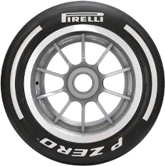
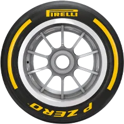
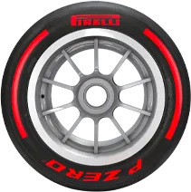
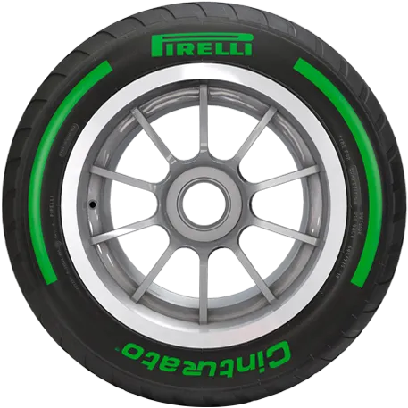
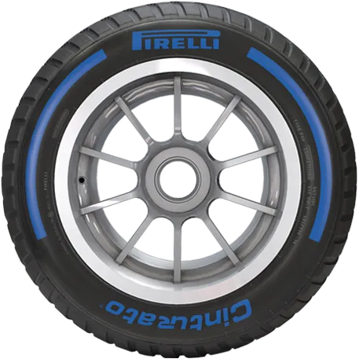

NEUMATICO DURO
- Duracion:40 a 60 vueltas
- Adherencia:Media
- Temperatura optima:95°C - 105°C
- Uso:Circuitos abrasivos o con altas temperaturas, ideal para estrategias a una sola parada.

NEUMATICO MEDIO
- Duracion:25 a 35 vueltas
- Adherencia:Alta
- Temperatura optima:100°C - 110°C
- Uso:Carreras largas con equilibrio entre rendimiento y durabilidad. Muy versátil, ideal para estrategias mixtas.

NEUMATICO BLANDO
- Duracion:15 a 20 vueltas
- Adherencia:Muy alta
- Temperatura optima:105°C - 115°C
- Uso:Clasificación y tramos cortos de carrera, ideal para circuitos con poco desgaste o alta exigencia de agarre.

NEUMATICO INTERMEDIO
- Duracion:15 a 40 vueltas
- Adherencia:Buena sobre piso húmedo
- Temperatura optima:40°C - 80°C
- Uso:Lluvia ligera o pista con zonas húmedas; permite seguir en pista sin cambiar a lluvia extrema.

NEUMATICO DE LLUVIA EXTREMA
- Duracion:10 a 30 vueltas
- Adherencia:Excelente en agua acumulada
- Temperatura optima:30°C - 70°C
- Uso:Lluvia intensa y agua acumulada; máximo drenaje para evitar aquaplaning.